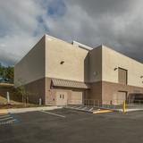
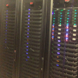
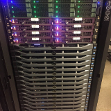

Services
A one-stop shop for our scientific computing needs
Compute
All the resources you need in one place: compute nodes, GPUs, blazing fast interconnect, parallel filesystems, and more!
Explore
Memex provides the software, storage, and administrative support you'll need to explore and analyze your research data.
Discover
Carnegie Institution for Science is dedicated to all of its research scientists to aid in solving their most challenging and data-intensive calculations.
About Memex
Why should I use Memex?
Memex is a unified Carnegie Institution for Science (CIS) resource for your work and has many advantages over individual or department-only solutions: it is hosted in a 24/7 datacenter with secure access, provides backup power during area outages, and has access to Stanford's remote hands service for onsite administration. All of these features provide the basis for any scientific computing solution.
Memex users are benefiting from performance levels that only large scale HPC systems can offer: high-performance I/O infrastructure, a petabyte of raw storage, a variety of hardware configurations, GPU accelerators, a ticketing system for administrators, and planning provided by Carnegie's SciComp Committee.
For researchers and collaborators, Memex can avoid the cost of operating their own cluster while getting access to a larger computing resource.
How much does it cost?
Memex is free to use for anyone performing research at Carnegie. Any faculty member can request access and get a base storage allocation. Our job scheduler submits to a shared or department queue based on group access. In case those free resources are not sufficient, we provide researchers with the opportunity to purchase additional resources, whether it is on-prem at SRCF or in the cloud. Using a traditional compute cluster condominium model, participating researchers and their labs get priority access to the resource(s) they purchase. When they're idle, those resources are generally available to others in a shared queue/partition.
How big is it?
Over the last couple of years, we have worked with departments and individuals to add resources based on their need. As of early 2019, Memex is comprised of 126 compute nodes, which are available to all researchers. For technical details about Memex, please refer to the tech specs section of the documentation.
Ok, how do I start?
You can request an account right now, take a look at the documentation, and drop us an email if you have any question.
I want my own nodes!
If you're interested in becoming an owner and setting up your own partition on Memex, contact us at memexsupport@carnegiescience.edu to let us know you're interested and we'll get back to you.
Timeline
In our brief history ...
-

2016-2018
Original Memex Purchase
Our SciComp Committee moves to purchase Memex on September 28th, 2015. Prior to this, researchers would create their own clusters and/or apply for external resources such as national supercomputing centers. Memex was initially comprised of 100 24-core compute nodes, 2 24-core compute nodes each with one GPU, a 700TB parallel file system, and high-speed network for fast parallel computing. Memex is hosted by Stanford's SRCF, a modern state-of-the-art datacenter.
-

April 2017
Home Storage Added
Memex user home directories are moved from Lustre to a new 300TB storage server, providing a workspace for researchers who don't require a parallel file system. This also improves the performance of our parallel filesystem.
-
July 2017
New Compute Nodes
Eight new high-density compute nodes are added, making Memex a multi-vendor cluster. The newer Intel Xeon E5 2680 v4 provides 4 more cores per node along with 128GB of memory per node.
-

March 2018
New "high-density/high-memory" Nodes
Memex added 8 new compute nodes, equipped with 256GB of memory each, to support the new Intel Skylake 6130 CPUs. The Skylake CPUs provide 8 more cores per node. Two servers packed into a 1U format allow for more cores per rack.
-
September 2018
Memex 2.0
After two years, Memex is upgraded to a new cluster provisioner and operating system, OpenHPC/CentOS 7.5, to ensure the latest security and OS patches are installed.
-
February 2019
More "high-density/high-memory" Nodes
Eight more Intel Skylake compute nodes with 256GB of memory installed.
-
Join Us !!
Click Here